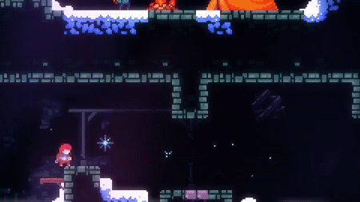
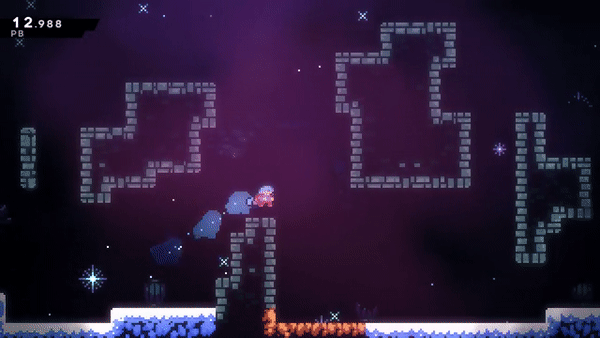
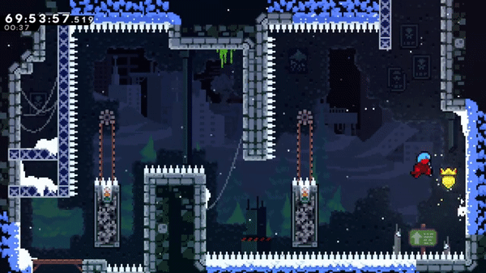
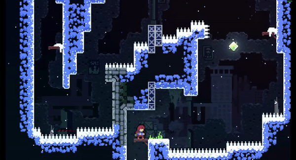

Super/Reverse Super
A super is performed by dashing on the ground followed by a jump, which results in a long-distanced jump. A super travels the same distance as simply jumping and then dashing, so supers tend to not provide much benefit to the player outside of speedrunning. A reverse super is a super in the opposite direction, which can be done by switching directions when jumping (ex. dash right, then jump left).
Hyper/ReverseHyper

A hyper is performed by dashing down diagonally and then jumping before the dash ends. Hypers function much like supers, but give the player an increase in speed that is significantly greater than either a super or dash. Madeline travels lower when performing a hyper, allowing to her jump through tighter gaps than a super. This move is first introduced to the player in Chapter 8's C-side, but is only used in two sections (once at the beginning of the level and once again at the end of the final room).
As with supers, it is possible to do a reverse hyper by switching directions when jumping, although this has limited practical value.
Wavedash

A wavedash can be performed by dashing down diagonally after a jump and jumping almost instantly after landing. Wavedashes are formally introduced to the player in Chapter 9's 6th sub-chapter, Determination.
Wallbounce

A wallbounce occurs when the player dashes upwards when adjacent to a wall and then jumps during the dash. The jump can be done at any time until the end of the dash, causing the wallbounce to travel higher the longer that the jump is delayed. Wallbounces allow the player to travel vertically more quickly than a dash or wallkick, and can be used in multiple levels to complete them faster. This technique is taught and used in Chapter 7's B-Side, as well as Chapter 9, and is required to complete the C-Sides (excluding 1C, 2C, and 8C) and Chapter 9.
Demodash

A demodash (named after its discoverer, DemoJameson) is performed by dashing down, then immediately (within 4 frames or 0.066 seconds, 0.068 seconds of in-game time) releasing the down key. This causes Madeline to dash horizontally while in a crouched state at the same time. Being crouched reduces the size of the player's hitbox, so this can be used to fit through gaps that cannot normally be traveled through. If one not only releases the down key but also inputs other directions, a demodash can be done upwards or diagonally up.
Neutral Jump
A neutral jump occurs when the player jumps away from a wall without inputting a direction or holding down the grab button, which causes the player to jump away from the wall by a smaller distance than a wallkick. This can allow the player to move back to the wall at the peak of the neutral jump, which does not use up stamina like a climb-jump, but still allows the player to travel vertically up the wall. Neutral jumps can also allow the player to climb walls when out of stamina or if the wall cannot be traversed with climb-jumps.
Spikejump

A spikejump is a wallkick or neutral jump performed on a corner with spikes on it. This is possible because spikes do not harm Madeline when she is moving in the same direction they are pointing. As long as Madeline is moving in the same direction as the spikes, she can wall kick off of the wall behind the spikes. Spikejumps are required to obtain Chapter 1: Forsaken City A-Side's winged golden strawberry, and are often used in speedruns, most notably to skip a large part of Chapter 5: Mirror Temple B-Side's 2nd subchapter.
It's also called a spikejump